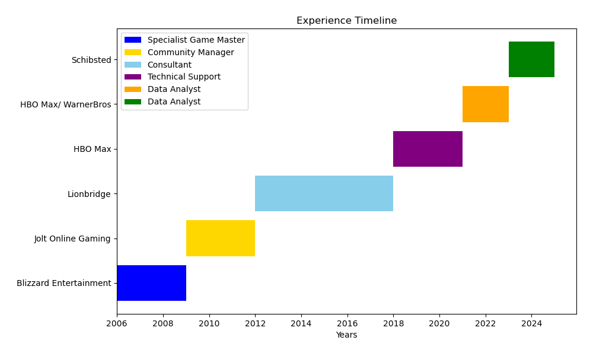
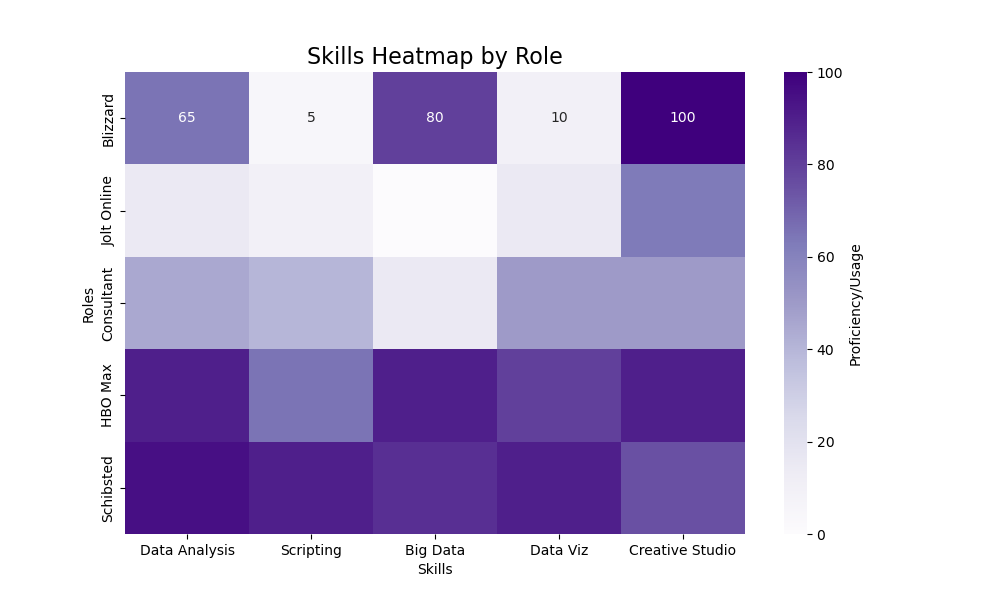
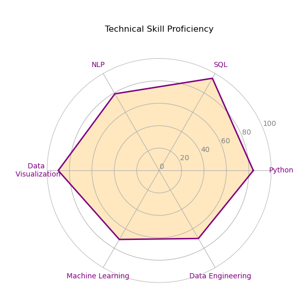
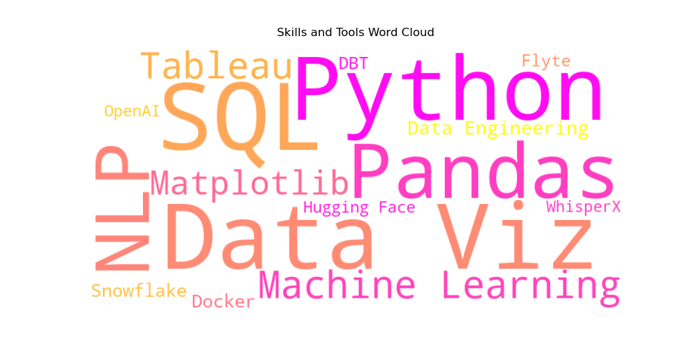
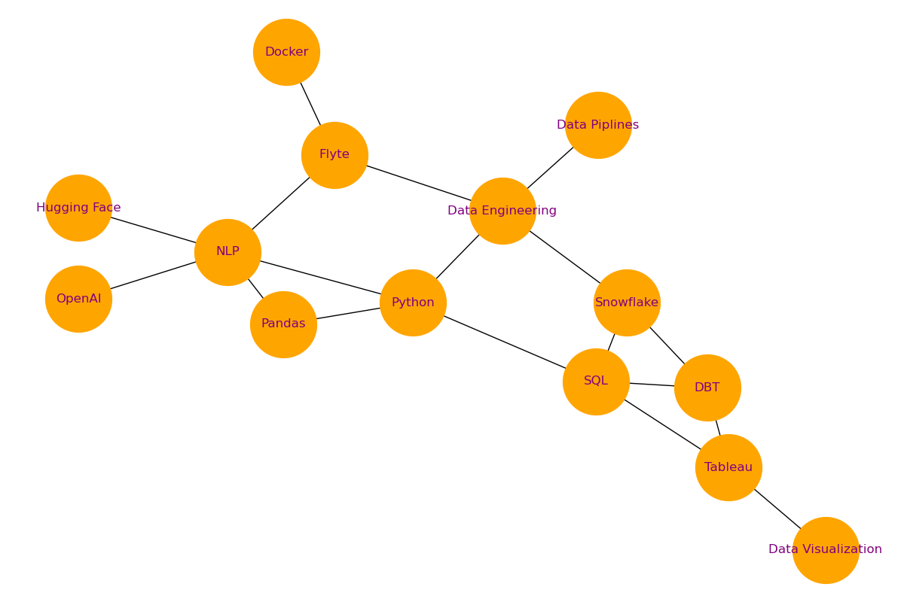

Exploring insights, uncovering patterns, and driving decisions with data.
Welcome! Below are visualizations that illustrate my skills, professional journey, and approach to data analytics. These charts not only summarize my expertise but also highlight how I use data to tell compelling stories and deliver actionable insights.
This timeline captures my professional journey across the tech and entertainment sectors, showcasing roles where I honed my technical and analytical expertise.
This heatmap provides a detailed look at how I applied specific skills across my roles.
A visual representation of my technical proficiency across key areas, reflecting my strengths in tools, programming, and machine learning techniques.
Words that define my professional experience, with emphasis on data, tools, and technologies that have shaped my career.
This network diagram showcases the interconnected tools and techniques I’ve used to build robust data solutions, emphasizing their relationships and applications.
